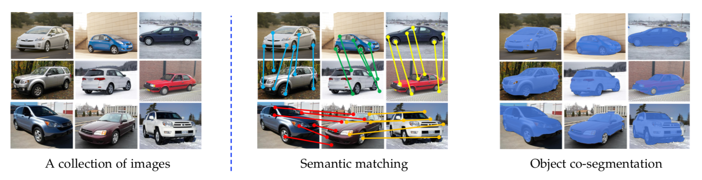
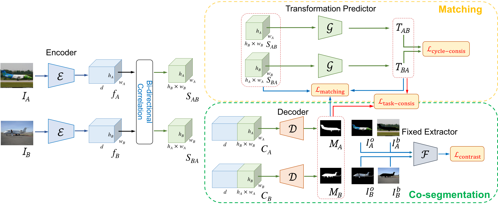

Abstract
We present an approach for jointly matching and segmenting object instances of the same category within a collection of images. In contrast to existing algorithms that tackle the tasks of semantic matching and object co-segmentation in isolation, our method exploits the complementary nature of the two tasks. The key insights of our method are two-fold. First, the estimated dense correspondence fields from semantic matching provide supervision for object co-segmentation by enforcing consistency between the predicted masks from a pair of images. Second, the predicted object masks from object co-segmentation in turn allow us to reduce the adverse effects due to background clutters for improving semantic matching. Our model is end-to-end trainable and does not require supervision from manually annotated correspondences and object masks. We validate the efficacy of our approach on five benchmark datasets: TSS, Internet, PF-PASCAL, PF-WILLOW, and SPair-71k, and show that our algorithm performs favorably against the state-of-the-art methods on both semantic matching and object co-segmentation tasks.
Papers
Citation
Yun-Chun Chen, Yen-Yu Lin, Ming-Hsuan Yang, and Jia-Bin Huang, "Show, Match and Segment: Joint Weakly Supervised Learning of Semantic Matching and Object Co-segmentation", in IEEE Transactions on Pattern Analysis and Machine Intelligence (PAMI), 2020.
Yun-Chun Chen, Po-Hsiang Huang, Li-Yu Yu, Jia-Bin Huang, Ming-Hsuan Yang, and Yen-Yu Lin, "Deep Semantic Matching with Foreground Detection and Cycle-Consistency", in Asian Conference on Computer Vision (ACCV), 2018.
BibTex
@article{MaCoSNet,
author = {Chen, Yun-Chun and Lin, Yen-Yu and Yang, Ming-Hsuan and Huang, Jia-Bin},
title = {Show, Match and Segment: Joint Weakly Supervised Learning of Semantic Matching and Object Co-segmentation},
journal = {IEEE Transactions on Pattern Analysis and Machine Intelligence (PAMI)},
year = {2020}
}
@inproceedings{WeakMatchNet,
author = {Chen, Yun-Chun and Huang, Po-Hsiang and Yu, Li-Yu and Huang, Jia-Bin and Yang, Ming-Hsuan and Lin, Yen-Yu},
title = {Deep Semantic Matching with Foreground Detection and Cycle-Consistency},
booktitle = {Asian Conference on Computer Vision (ACCV)},
year = {2018}
}

MaCoSNet

References
- • Choy et al. Universal Correspondence Network. In NIPS, 2016.
- • Han et al. SCNet: Learning Semantic Correspondence. In ICCV, 2017.
- • Ham et al. Proposal Flow: Semantic Correspondences from Object Proposals. TPAMI, 2017.
- • Rocco et al. Convolutional Neural Network Architecture for Geometric Matching. In CVPR, 2017.
- • Rocco et al. End-to-End Weakly-Supervised Semantic Alignment. In CVPR, 2018.
- • Chen et al. Deep Semantic Matching with Foreground Detection and Cycle-Consistency. In ACCV, 2018.
- • Rocco et al. Neighbourhood Consensus Networks. In NeurIPS, 2018.
- • Kim et al. Recurrent Transformer Networks for Semantic Correspondence. In NeurIPS, 2018.
- • Jeon et al. PARN: Pyramidal Affine Regression Networks for Dense Semantic Correspondence. In ECCV, 2018.
- • Taniai et al. Joint Recovery of Dense Correspondence and Cosegmentation in Two Images. In CVPR, 2016.
- • Li et al. Deep Object Co-Segmentation. In ACCV, 2018.
- • Hsu et al. Co-attention CNNs for Unsupervised Object Co-segmentation. In IJCV, 2018.
- • Seo et al. Attentive Semantic Alignment with Offset-Aware Correlation Kernels. In ECCV, 2018.
- • Min et al. Hyperpixel Flow: Semantic Correspondence with Multi-layer Neural Features. In ICCV, 2019.
- • Quan et al. Object Co-segmentation via Graph Optimized-Flexible Manifold Ranking. In CVPR, 2016.
- • Rubinstein et al. Unsupervised Joint Object Discovery and Segmentation in Internet Images. In CVPR, 2013.